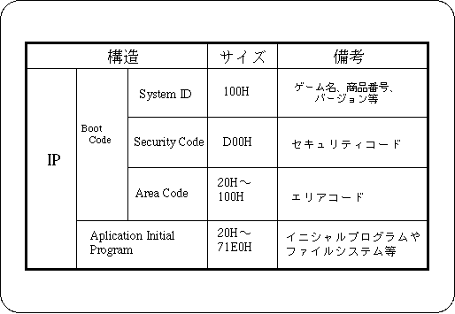

Return to previous page | Return to menu | Go to next page
IP is written in the system area of the CD-ROM disc and is used when the application uses Saturn's boot system. IP is required for all CD-ROM program disks.
(Not required for data discs). The details of
IP are described in "DISC format standard of the programmer's guide, boot system".
IP consists of boot code and application initial program.
Boot code consists of ID code such as game name, security code and area code supplied by Sega.
The application initial program is placed immediately after the area code and is executed immediately after the area code is executed. Thereafter, the program proceeds under the control of the application.

For details on how to create an IP, see “Programmer's Guide Boot System”.